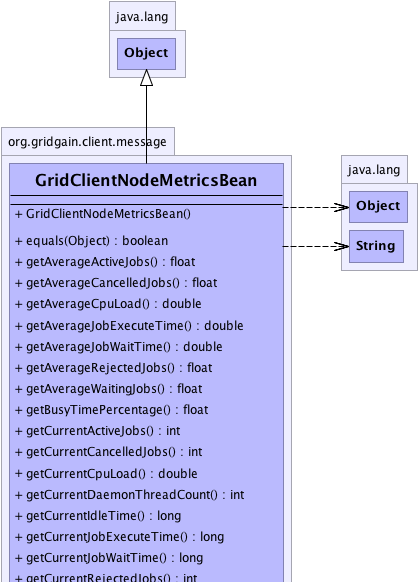
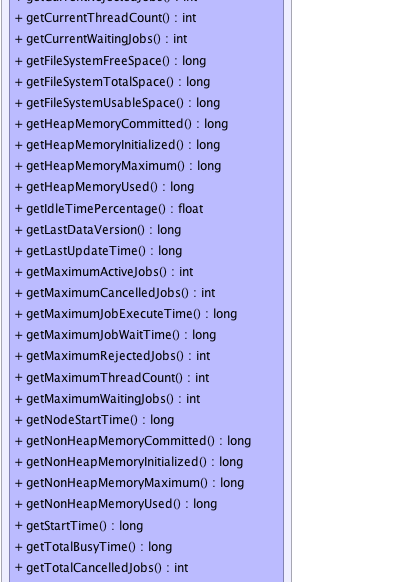
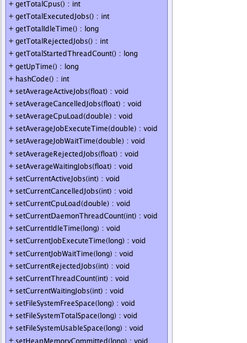
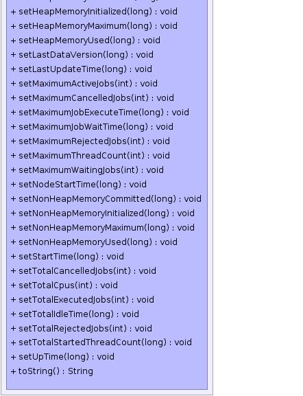

org.gridgain.client.message.GridClientNodeMetricsBean
org.gridgain.client.message.GridClientNodeMetricsBean
|
GridGain™ 4.0.3c
Community Edition |
|||||||||
| PREV CLASS NEXT CLASS | FRAMES NO FRAMES | |||||||||
| SUMMARY: NESTED | FIELD | CONSTR | METHOD | DETAIL: FIELD | CONSTR | METHOD | |||||||||
java.lang.Object
public class GridClientNodeMetricsBean
Node metrics bean.
| Wiki | |
| Forum |
|  |
|  |
|  |
|  |
| Constructor Summary | |
|---|---|
GridClientNodeMetricsBean()
|
|
| Method Summary | |
|---|---|
boolean |
equals(Object obj)
|
float |
getAverageActiveJobs()
Gets average active jobs. |
float |
getAverageCancelledJobs()
Gets average cancelled jobs. |
double |
getAverageCpuLoad()
Gets average of CPU load values over all metrics kept in the history. |
double |
getAverageJobExecuteTime()
Gets average job execution time. |
double |
getAverageJobWaitTime()
Gets average job wait time. |
float |
getAverageRejectedJobs()
|
float |
getAverageWaitingJobs()
Gets average waiting jobs. |
float |
getBusyTimePercentage()
Gets percentage of time this node is busy executing jobs vs. idling. |
int |
getCurrentActiveJobs()
Gets current active jobs. |
int |
getCurrentCancelledJobs()
Gets current cancelled jobs. |
double |
getCurrentCpuLoad()
Returns the system load average for the last minute. |
int |
getCurrentDaemonThreadCount()
Returns the current number of live daemon threads. |
long |
getCurrentIdleTime()
|
long |
getCurrentJobExecuteTime()
Gets current job execute time. |
long |
getCurrentJobWaitTime()
Gets current job wait time. |
int |
getCurrentRejectedJobs()
|
int |
getCurrentThreadCount()
Returns the current number of live threads including both daemon and non-daemon threads. |
int |
getCurrentWaitingJobs()
Gets current waiting jobs. |
long |
getFileSystemFreeSpace()
Returns the number of unallocated bytes in the partition. |
long |
getFileSystemTotalSpace()
Returns the size of the partition. |
long |
getFileSystemUsableSpace()
Returns the number of bytes available to this virtual machine on the partition. |
long |
getHeapMemoryCommitted()
Returns the amount of heap memory in bytes that is committed for the Java virtual machine to use. |
long |
getHeapMemoryInitialized()
Returns the amount of heap memory in bytes that the Java virtual machine initially requests from the operating system for memory management. |
long |
getHeapMemoryMaximum()
Returns the maximum amount of heap memory in bytes that can be used for memory management. |
long |
getHeapMemoryUsed()
Returns the current heap size that is used for object allocation. |
float |
getIdleTimePercentage()
Gets percentage of time this node is idling vs. executing jobs. |
long |
getLastDataVersion()
Data grid assigns incremental versions to all cache operations. |
long |
getLastUpdateTime()
Gets last update time. |
int |
getMaximumActiveJobs()
Gets max active jobs. |
int |
getMaximumCancelledJobs()
Gets maximum cancelled jobs. |
long |
getMaximumJobExecuteTime()
Gets maximum job execution time. |
long |
getMaximumJobWaitTime()
Gets max job wait time. |
int |
getMaximumRejectedJobs()
|
int |
getMaximumThreadCount()
Returns the maximum live thread count since the Java virtual machine started or peak was reset. |
int |
getMaximumWaitingJobs()
Gets maximum waiting jobs. |
long |
getNodeStartTime()
Returns the start time of grid node in milliseconds. |
long |
getNonHeapMemoryCommitted()
Returns the amount of non-heap memory in bytes that is committed for the Java virtual machine to use. |
long |
getNonHeapMemoryInitialized()
Returns the amount of non-heap memory in bytes that the Java virtual machine initially requests from the operating system for memory management. |
long |
getNonHeapMemoryMaximum()
Returns the maximum amount of non-heap memory in bytes that can be used for memory management. |
long |
getNonHeapMemoryUsed()
Returns the current non-heap memory size that is used by Java VM. |
long |
getStartTime()
Returns the start time of the Java virtual machine in milliseconds. |
long |
getTotalBusyTime()
|
int |
getTotalCancelledJobs()
Gets total cancelled jobs. |
int |
getTotalCpus()
Returns the number of CPUs available to the Java Virtual Machine. |
int |
getTotalExecutedJobs()
Gets total active jobs. |
long |
getTotalIdleTime()
|
int |
getTotalRejectedJobs()
|
long |
getTotalStartedThreadCount()
Returns the total number of threads created and also started since the Java virtual machine started. |
long |
getUpTime()
Returns the uptime of the Java virtual machine in milliseconds. |
int |
hashCode()
|
void |
setAverageActiveJobs(float avgActiveJobs)
Sets average active jobs. |
void |
setAverageCancelledJobs(float avgCancelledJobs)
Sets average cancelled jobs. |
void |
setAverageCpuLoad(double avgLoad)
Sets CPU load average over the metrics history. |
void |
setAverageJobExecuteTime(double avgJobExecTime)
Sets average job execution time. |
void |
setAverageJobWaitTime(double avgJobWaitTime)
Sets average job wait time. |
void |
setAverageRejectedJobs(float avgRejectedJobs)
|
void |
setAverageWaitingJobs(float avgWaitingJobs)
Sets average waiting jobs. |
void |
setCurrentActiveJobs(int curActiveJobs)
Sets current active jobs. |
void |
setCurrentCancelledJobs(int curCancelledJobs)
Sets current cancelled jobs. |
void |
setCurrentCpuLoad(double load)
Sets current CPU load. |
void |
setCurrentDaemonThreadCount(int daemonThreadCnt)
Sets daemon thread count. |
void |
setCurrentIdleTime(long curIdleTime)
Sets time elapsed since execution of last job. |
void |
setCurrentJobExecuteTime(long curJobExecTime)
Sets current job execute time. |
void |
setCurrentJobWaitTime(long curJobWaitTime)
Sets current job wait time. |
void |
setCurrentRejectedJobs(int curRejectedJobs)
|
void |
setCurrentThreadCount(int threadCnt)
Sets thread count. |
void |
setCurrentWaitingJobs(int curWaitingJobs)
Sets current waiting jobs. |
void |
setFileSystemFreeSpace(long fileSysFreeSpace)
Sets the number of unallocated bytes in the partition. |
void |
setFileSystemTotalSpace(long fileSysTotalSpace)
Sets size of the partition. |
void |
setFileSystemUsableSpace(long fileSysUsableSpace)
Sets the number of bytes available to this virtual machine on the partition. |
void |
setHeapMemoryCommitted(long heapCommitted)
Sets committed heap memory. |
void |
setHeapMemoryInitialized(long heapInit)
Sets heap initial memory. |
void |
setHeapMemoryMaximum(long heapMax)
Sets maximum possible heap memory. |
void |
setHeapMemoryUsed(long heapUsed)
Sets used heap memory. |
void |
setLastDataVersion(long lastDataVer)
|
void |
setLastUpdateTime(long lastUpdateTime)
Sets last update time. |
void |
setMaximumActiveJobs(int maxActiveJobs)
Sets max active jobs. |
void |
setMaximumCancelledJobs(int maxCancelledJobs)
Sets maximum cancelled jobs. |
void |
setMaximumJobExecuteTime(long maxJobExecTime)
Sets maximum job execution time. |
void |
setMaximumJobWaitTime(long maxJobWaitTime)
Sets max job wait time. |
void |
setMaximumRejectedJobs(int maxRejectedJobs)
|
void |
setMaximumThreadCount(int peakThreadCnt)
Sets peak thread count. |
void |
setMaximumWaitingJobs(int maxWaitingJobs)
Sets maximum waiting jobs. |
void |
setNodeStartTime(long nodeStartTime)
Sets node start time. |
void |
setNonHeapMemoryCommitted(long nonHeapCommitted)
Sets committed non-heap memory. |
void |
setNonHeapMemoryInitialized(long nonHeapInit)
Sets initial non-heap memory. |
void |
setNonHeapMemoryMaximum(long nonHeapMax)
Sets maximum possible non-heap memory. |
void |
setNonHeapMemoryUsed(long nonHeapUsed)
Sets used non-heap memory. |
void |
setStartTime(long startTime)
Sets VM start time. |
void |
setTotalCancelledJobs(int totalCancelledJobs)
Sets total cancelled jobs. |
void |
setTotalCpus(int availProcs)
Sets available processors. |
void |
setTotalExecutedJobs(int totalExecutedJobs)
Sets total active jobs. |
void |
setTotalIdleTime(long totalIdleTime)
Set total node idle time. |
void |
setTotalRejectedJobs(int totalRejectedJobs)
|
void |
setTotalStartedThreadCount(long startedThreadCnt)
Sets started thread count. |
void |
setUpTime(long upTime)
Sets VM up time. |
String |
toString()
|
| Methods inherited from class java.lang.Object |
|---|
clone, finalize, getClass, notify, notifyAll, wait, wait, wait |
| Constructor Detail |
|---|
public GridClientNodeMetricsBean()
| Method Detail |
|---|
public long getLastUpdateTime()
public void setLastUpdateTime(long lastUpdateTime)
lastUpdateTime - Last update time.public int getMaximumActiveJobs()
public void setMaximumActiveJobs(int maxActiveJobs)
maxActiveJobs - Max active jobs.public int getCurrentActiveJobs()
public void setCurrentActiveJobs(int curActiveJobs)
curActiveJobs - Current active jobs.public float getAverageActiveJobs()
public void setAverageActiveJobs(float avgActiveJobs)
avgActiveJobs - Average active jobs.public int getMaximumWaitingJobs()
public void setMaximumWaitingJobs(int maxWaitingJobs)
maxWaitingJobs - Maximum waiting jobs.public int getCurrentWaitingJobs()
public void setCurrentWaitingJobs(int curWaitingJobs)
curWaitingJobs - Current waiting jobs.public float getAverageWaitingJobs()
public void setAverageWaitingJobs(float avgWaitingJobs)
avgWaitingJobs - Average waiting jobs.public int getMaximumRejectedJobs()
public void setMaximumRejectedJobs(int maxRejectedJobs)
maxRejectedJobs - Maximum number of jobs rejected during a single collision resolution event.public int getCurrentRejectedJobs()
public void setCurrentRejectedJobs(int curRejectedJobs)
curRejectedJobs - Number of jobs rejected during most recent collision resolution.public float getAverageRejectedJobs()
public void setAverageRejectedJobs(float avgRejectedJobs)
avgRejectedJobs - Average number of jobs this node rejects.public int getTotalRejectedJobs()
public void setTotalRejectedJobs(int totalRejectedJobs)
totalRejectedJobs - Total number of jobs this node ever rejected.public int getMaximumCancelledJobs()
public void setMaximumCancelledJobs(int maxCancelledJobs)
maxCancelledJobs - Maximum cancelled jobs.public int getCurrentCancelledJobs()
public void setCurrentCancelledJobs(int curCancelledJobs)
curCancelledJobs - Current cancelled jobs.public float getAverageCancelledJobs()
public void setAverageCancelledJobs(float avgCancelledJobs)
avgCancelledJobs - Average cancelled jobs.public int getTotalExecutedJobs()
public void setTotalExecutedJobs(int totalExecutedJobs)
totalExecutedJobs - Total active jobs.public int getTotalCancelledJobs()
public void setTotalCancelledJobs(int totalCancelledJobs)
totalCancelledJobs - Total cancelled jobs.public long getMaximumJobWaitTime()
public void setMaximumJobWaitTime(long maxJobWaitTime)
maxJobWaitTime - Max job wait time.public long getCurrentJobWaitTime()
public void setCurrentJobWaitTime(long curJobWaitTime)
curJobWaitTime - Current job wait time.public double getAverageJobWaitTime()
public void setAverageJobWaitTime(double avgJobWaitTime)
avgJobWaitTime - Average job wait time.public long getMaximumJobExecuteTime()
public void setMaximumJobExecuteTime(long maxJobExecTime)
maxJobExecTime - Maximum job execution time.public long getCurrentJobExecuteTime()
public void setCurrentJobExecuteTime(long curJobExecTime)
curJobExecTime - Current job execute time.public double getAverageJobExecuteTime()
public void setAverageJobExecuteTime(double avgJobExecTime)
avgJobExecTime - Average job execution time.public long getTotalBusyTime()
public long getTotalIdleTime()
public void setTotalIdleTime(long totalIdleTime)
totalIdleTime - Total node idle time.public long getCurrentIdleTime()
public void setCurrentIdleTime(long curIdleTime)
curIdleTime - Time elapsed since execution of last job.public float getBusyTimePercentage()
1 and greater than or equal to 0)public float getIdleTimePercentage()
1 and greater than or equal to 0)public int getTotalCpus()
Runtime.availableProcessors()
method.
Note that this value may change during successive invocations of the virtual machine.
public double getCurrentCpuLoad()
If the load average is not available, a negative value is returned.
This method is designed to provide a hint about the system load and may be queried frequently. The load average may be unavailable on some platform where it is expensive to implement this method.
[0, 1] range.
Negative value if not available.public double getAverageCpuLoad()
[0, 1] range over all metrics kept
in the history.public long getHeapMemoryInitialized()
-1 if the initial memory size is undefined.
-1 if undefined.public long getHeapMemoryUsed()
used heap memory values of all heap memory pools.
The amount of used memory in the returned is the amount of memory occupied by both live objects and garbage objects that have not been collected, if any.
Note: this is not an aggregated metric and it's calculated from the time of the node's startup.
public long getHeapMemoryCommitted()
committed heap memory values of all heap memory pools.
Note: this is not an aggregated metric and it's calculated from the time of the node's startup.
public long getHeapMemoryMaximum()
-1
if the maximum memory size is undefined.
This amount of memory is not guaranteed to be available for memory management if it is greater than the amount of committed memory. The Java virtual machine may fail to allocate memory even if the amount of used memory does not exceed this maximum size.
This value represents a setting of the heap memory for Java VM and is not a sum of all initial heap values for all memory pools.
Note: this is not an aggregated metric and it's calculated from the time of the node's startup.
-1 if undefined.public long getNonHeapMemoryInitialized()
-1 if the initial memory size is undefined.
This value represents a setting of non-heap memory for Java VM and is not a sum of all initial heap values for all memory pools.
Note: this is not an aggregated metric and it's calculated from the time of the node's startup.
-1 if undefined.public long getNonHeapMemoryUsed()
used non-heap memory values of all non-heap memory pools.
Note: this is not an aggregated metric and it's calculated from the time of the node's startup.
Note: this is not an aggregated metric and it's calculated from the time of the node's startup.
public long getNonHeapMemoryCommitted()
committed non-heap memory values of all non-heap memory pools.
Note: this is not an aggregated metric and it's calculated from the time of the node's startup.
public long getNonHeapMemoryMaximum()
-1
if the maximum memory size is undefined.
This amount of memory is not guaranteed to be available for memory management if it is greater than the amount of committed memory. The Java virtual machine may fail to allocate memory even if the amount of used memory does not exceed this maximum size.
This value represents a setting of the non-heap memory for Java VM and is not a sum of all initial non-heap values for all memory pools.
Note: this is not an aggregated metric and it's calculated from the time of the node's startup.
-1 if undefined.public long getUpTime()
public long getStartTime()
public long getNodeStartTime()
public int getCurrentThreadCount()
public int getMaximumThreadCount()
Note: this is not an aggregated metric and it's calculated from the time of the node's startup.
public long getTotalStartedThreadCount()
Note: this is not an aggregated metric and it's calculated from the time of the node's startup.
public int getCurrentDaemonThreadCount()
public long getFileSystemFreeSpace()
public long getFileSystemTotalSpace()
public long getFileSystemUsableSpace()
public long getLastDataVersion()
public void setTotalCpus(int availProcs)
availProcs - Available processors.public void setCurrentCpuLoad(double load)
load - Current CPU load.public void setAverageCpuLoad(double avgLoad)
avgLoad - CPU load average.public void setHeapMemoryInitialized(long heapInit)
heapInit - Heap initial memory.public void setHeapMemoryUsed(long heapUsed)
heapUsed - Used heap memory.public void setHeapMemoryCommitted(long heapCommitted)
heapCommitted - Committed heap memory.public void setHeapMemoryMaximum(long heapMax)
heapMax - Maximum possible heap memory.public void setNonHeapMemoryInitialized(long nonHeapInit)
nonHeapInit - Initial non-heap memory.public void setNonHeapMemoryUsed(long nonHeapUsed)
nonHeapUsed - Used non-heap memory.public void setNonHeapMemoryCommitted(long nonHeapCommitted)
nonHeapCommitted - Committed non-heap memory.public void setNonHeapMemoryMaximum(long nonHeapMax)
nonHeapMax - Maximum possible non-heap memory.public void setUpTime(long upTime)
upTime - VN up time.public void setStartTime(long startTime)
startTime - VM start time.public void setNodeStartTime(long nodeStartTime)
nodeStartTime - node start time.public void setCurrentThreadCount(int threadCnt)
threadCnt - Thread count.public void setMaximumThreadCount(int peakThreadCnt)
peakThreadCnt - Peak thread count.public void setTotalStartedThreadCount(long startedThreadCnt)
startedThreadCnt - Started thread count.public void setCurrentDaemonThreadCount(int daemonThreadCnt)
daemonThreadCnt - Daemon thread count.public void setFileSystemFreeSpace(long fileSysFreeSpace)
fileSysFreeSpace - The number of unallocated bytes in the partition.public void setFileSystemTotalSpace(long fileSysTotalSpace)
fileSysTotalSpace - Size of the partition.public void setFileSystemUsableSpace(long fileSysUsableSpace)
fileSysUsableSpace - The number of bytes available to
this virtual machine on the partition.public void setLastDataVersion(long lastDataVer)
lastDataVer - Last data version.public int hashCode()
hashCode in class Objectpublic boolean equals(Object obj)
equals in class Objectpublic String toString()
toString in class Object
|
GridGain™ 4.0.3c
Community Edition |
|||||||||
| PREV CLASS NEXT CLASS | FRAMES NO FRAMES | |||||||||
| SUMMARY: NESTED | FIELD | CONSTR | METHOD | DETAIL: FIELD | CONSTR | METHOD | |||||||||
|
GridGain - Real Time Big Data
|
|

|
|